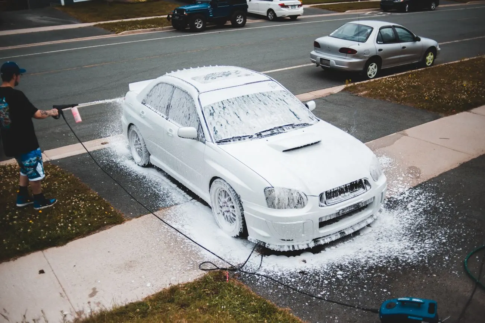
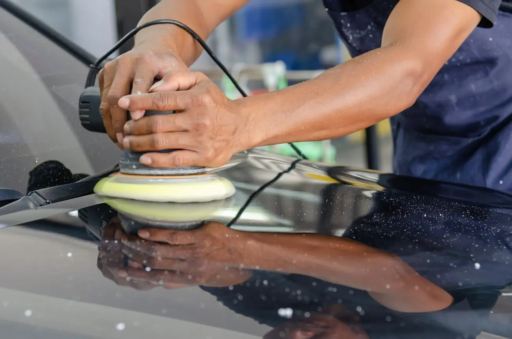
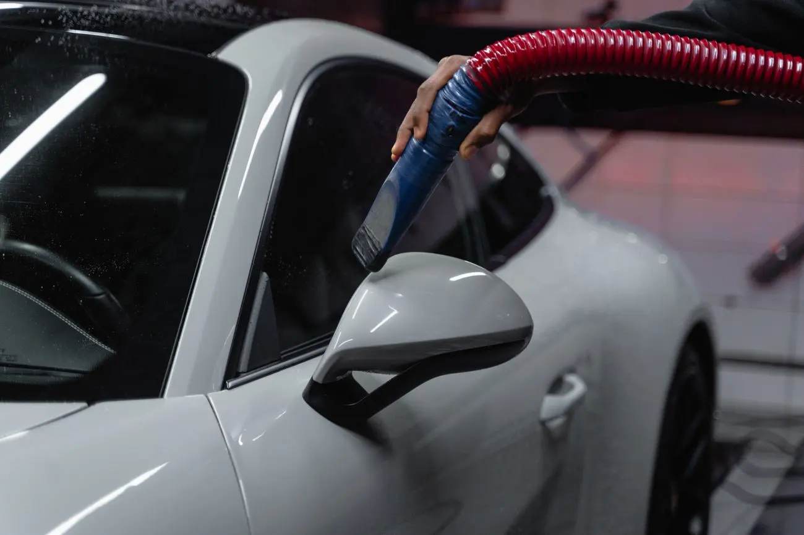

Interior detailing
Vacuuming, shampooing and stain removal, as described in client reviews.
Mobile detailing · Dallas, TX
Car washing and detailing that comes to you. Call to schedule.
5.0★ 76 Google reviews
What they do
Vacuuming, shampooing and stain removal, as described in client reviews.
The car done inside and out.
They come out to the customer. Ask about your location when you call.
Services listed on the mobiledetailing.io directory and mentioned in Google reviews. Call for details and pricing.
Gallery


Representative stock photos, not London’s PinPoint and not their work.
Reviews
“London does excellent work! He’s detailed my car inside and out twice now, and both times it has looked absolutely spotless and shining. He’s polite, professional, and pays great attention to detail, making sure to address any specific areas of concern. Quality work, fair pricing, and scheduling is easy. Highly recommend!”Google review, February 2026
“Very professional & fantastic work with interior detailing. Removed vomit stains completely, vacuumed & shampooed. Car smells brand new too! Great work!”Google review, October 2025
“London was prompt and professional. he did a great job on my vehicle at a fair price. I will definitely use his services again.”Google review, September 2025
“London did an amazing job on my car. It had been quite a while since the interior of my explorer had been detailed and we live out of that thing due to the kiddos sports. He had her looking so good after! I even said “I forgot she could look like this!” when he was done. Definitely calling him when it’s time for another car spa day.”Google review, May 2025
“London restored my car’s appearance to look like I drove it out of the showroom. He worked longer than expected on the damage the airport did to my paintwork. Great job and fantastic attitude. I would definitely recommend his talents to anyone. Thanks London!”Google review, April 2025
“London is very professional. Hard worker and he made my car SPOTLESS. I have never seen my car that clean even from the dealership. Took his time and pays close attention to detail. Even in the heat, he came out and did an amazing job.”Google review, June 2024
Reach out
Dallas area (DFW). This is a mobile business, so there is no shop to visit.
Mon – Sat 7 AM – 7 PM
Sunday closed
Per the Google listing.
Call to schedule your detail.